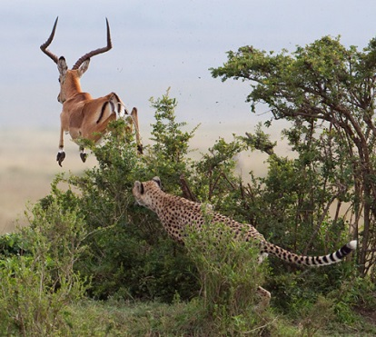
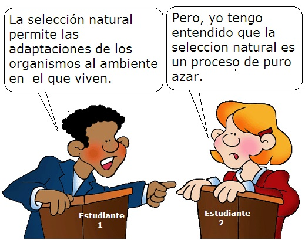

La asombrosa selección natural - Evaluación Unidad 4
Con base en la unidad 4: “¿Por qué te escondes tan bien?” responde
-
De las siguientes afirmaciones sobre la selección natural hay una falsa. Indica cual es.
Fue descubierta por Alfred Russell Wallace y Charles Robert Darwin.
Permite a los organismos prepararse para situaciones futuras.
Es el resultado de la reproducción diferencial de fenotipos diversos en una población.
Permite la adaptación de los organismos a sus ambientes.
-
En una población, mientras los individuos con ciertas características hereditarias sobreviven y se reproducen, otros con características menos favorables mueren tempranamente y no llegan a reproducirse. Este hecho se conoce como
Reproducción sexual
Reproducción diferencial
Crecimiento exponencial
Selección artificial
Las preguntas 3 a 6 se resuelven teniendo en cuenta la siguiente información:
El libro de Charles Robert Darwin (El Origen de las Especies) enfatiza sobre como las especies se han adaptado a sus ambientes a través de selección natural. Darwin llegó a la teoría de la selección natural tras realizar muchas observaciones, de las cuales saco deducciones. Brevemente se puede describir la teoría de la selección natural como sigue:

Ahora sabemos que la variación se origina a través de eventos aleatorios de mutación y recombinación genética, pero la selección natural es el resultado de un criterio ambiental definido por el éxito reproductivo.
-
Según el texto, las poblaciones no crecen de forma exponencial ya que:
Los individuos tienen variaciones dentro de la población.
Algunos individuos presentan mutaciones.
Las variaciones son heredables.
Los recursos de los cuales dependen son escasos.
-
Aquellos individuos que heredan características que los adaptan mejor al ambiente tienen probabilidad de dejar mayor descendencia. De esto se pude inferir que:
La presencia de adaptaciones en los organismos es crucial para la supervivencia.
La reproducción desigual es la fuente de la mutación.
Los organismos que dejan mayor descendencia son aquellos que no presentan variaciones.
La exposición a un ambiente cambiante genera la adaptación en los organismos.
-
Según el contenido del texto, se podría concluir que la mejor definición para selección natural es:
La teoría que explica el origen de las mutaciones.
Supervivencia y reproducción diferencial de unos organismos respecto a otros.
El resultado de la variación del ambiente en el que vive un organismo.
La tendencia natural que tienen las poblaciones a crecer exponencialmente.
-
Darwin propuso la selección natural como mecanismo evolutivo, lo que implicó que nuevas especies evolucionaron a partir de formas ancestrales por:
la acumulación gradual de adaptaciones a ambientes naturales cambiantes.
la heredabilidad de adaptaciones adquiridas para el ambiente.
la lucha por los recursos limitados.
Intervención divina.
-
Los depredadores que obtienen el alimento más eficientemente dejarán más descendencia; lo mismo ocurre con aquellas presas que sean más eficientes en evitar ser devoradas. Esto sin duda conllevará a:
la extinción de presas y depredadores
la coevolución de ambas especies
el aumento del número de individuos de depredadores sobre el de presas.
la extinción de las presas.
-
Observa la siguiente imagen y lee la posición de estos dos estudiantes.
La estudiante N° 2 considera que la selección natural es un proceso que está basado en el azar. Esta idea es errónea por las siguientes razones:
el mecanismo que es aleatorio es la mutación y la reproducción, no la selección.
la selección natural es una tendencia a la perfección de las especies.
la superviviencia de los organismos, frente a las presiones de su entorno, no es aleatoria.
La selección natural “favorece” las variaciones ventajosas, por más raras que sean estas en un inicio.
Son correctas:
1 y 2.
2, 3 y 4.
Solo la segunda.
1, 3 y 4.
-
La importancia de la selección natural para la biología es que este mecanismo es:
El único mecanismo evolutivo.
El principal mecanismo evolutivo, aunque no el único.
Responsable de la reproducción sexual
El causante de las mutaciones aleatorias.
-
Cuando los biólogos dicen que han observado evolución, significa que ellos han detectado cambios en la frecuencia de los genes de la población. (Con frecuencia los cambios genéticos están referidos a cambios fenotípicos que son heredables). Esto significa que:
La evolución es una tendencia en la naturaleza hacia la perfección.
La evolución es contradictoria con cualquier idea religiosa.
La evolución es el cambio de las frecuencias de genes en una población al pasar el tiempo.
La evolución es que un mono bajó de los árboles y se convirtió en persona.
-
En la siguiente imagen se ve como el pico del iiwi (Versitia coocinea) de Hawai se adapta a la corola de las plantas de lobelia de las cuales deriva su alimento. De igual manera, la corola de las flores de la lobelia se adaptan a la forma del pico del iiwi que transporta su polen a otras plantas permitiendo la reproducción.

Es de suponer que en las aves se adaptaron a la forma de las corolas de lobelia
Por el bien de la especie.
En un proceso gradual en el que los individuos con mejores variantes dejaban más descendencia:
Por intervención divina.
Por una sola mutación repentina.
Comentarios
Comments powered by Disqus